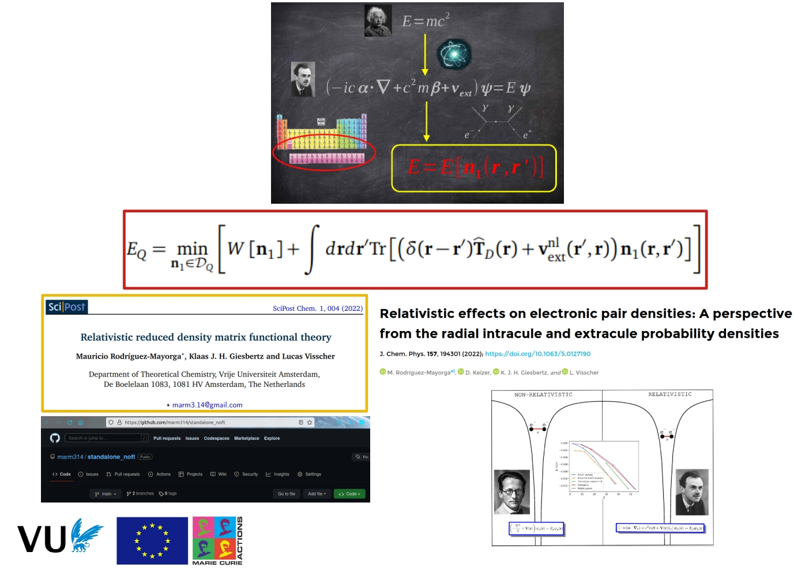

Research
Reduced density matrices, correlation, and relativistic effects.
Areas
- Relativistic density matrix functional theory
- Correlation indicators
- Model systems
- Conceptual DFT
- Machine learning in quantum chemistry
MC2021/22 ReReDMFT
The Relativistic Reduced Density Matrix Functional Theory project aims to extend reduced density matrix functional theory (RDMFT) to compounds of heavy elements, accounting for relativistic effects at an affordable computational cost. It is funded by a Marie Skłodowska-Curie Action, grant 891647-ReReDMFT.

Outputs
- Relativistic reduced density matrix functional theory, SciPost Chem. (2022)
- Relativistic effects on electronic pair densities, J. Chem. Phys. (2022)
- Standalone NOFT module, Zenodo (2022)
- Time-reversal symmetry in RDMFT and pCCD with complex-valued orbitals, J. Chem. Phys. (2025)
Collaborators
- Prof. Dr. L. Visscher and Dr. K.J.H. Giesbertz, VU Amsterdam
- Dr. F. Bruneval